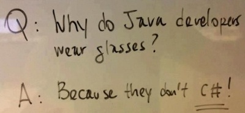

A discussion by socratic questioning.
For the class Gigantic Software Project Development, an assignment for groups of 3 was given to the students. The assignment consisted of creating a program for simulating amusements parks, while keeping in mind all of the safety regulations and pricing details. The implementation could be done in any programming language of choice. However, another part of the assignment was to fully explain why that particular programming language was chosen. Moe, Larry and Curley formed a team and started a discussion on which programming language they would be using. Bearing in mind that they should have to document exactly why they chose the programming language, the discussion got rather long.

An example of socratic questioning.
Moe would like to use C# as he is quite an expert in it. Larry on the other hand, thinks they should stick to Java as it is the programming language they know well by practicing it in other courses during the last 4 years. Curley does not really care what programming language is used, as long as the program can be written down easily in it. What follows is the discussion, where names in front of a paragraph or question depict who said what.
In 1972, a programming language called C was designed by Dennis Ritchie and in 1983 it was augmented by Bjarne Stroustrup with type checking and classes. This language was named C with Classes and it became known, along with some other new features, as C++ in 1984. The Sun Microsystems people in 1990 did not like C or C++, so they excluded some of the features like multiple inheritance, pointers, structs, enum types, operator overloading and a goto statement. Therefore making it a smaller, a simpler and especially a more reliable programming language called Java. Then, in July 2000, Microsoft announced the programming language C# because they disagreed with Sun Microsystems about the removal of all those features available in C++, except for multiple inheritance. Therefore, C# is very close to C++. It borrows mosts of its statements, keywords and operators directly from C++.
One can thus see C# as an advance over both C++ and Java, because it offers an alternative to the difficult C++ programming language but also an alternative for Java programmers who are missing features of C and C++. Another reason for the development of C# was to provide a language for component-based software development.
An important aspect of software development when talking about modularity is the ability to compartmentalize
your code and to import different libraries.
C# provides the functionality of referencing namespaces which are basically scopes for arbitrary sections of
code. In Java one can import certain classes. The main difference between the using statement from C# and
the import statement from Java is the fact that you can’t immediately use a single class in C#. You always
have to use the namespace. To compare this with Java, a namespace looks and behaves more like a Java package
and the using statement would correspond to the import wildcard in Java. Java imports with wildcards is
generally frowned upon by the Java community though, as this can lead to unnecessary imports and a less
clean dependency scheme. If you try to use the using directive on a specific class (say Card) like
this:
using Sorting.Card;
the compiler generates the following error: “‘Sorting.Card’ is a type, not a namespace. A using namespace directive can only be applied to namespaces.” If you want to use the Card class in a C# project, than you would need to import the whole namespace Sorting. In Java this would correspond to:
import Sorting.*;
while in Java you can alternatively do
import Sorting.Card;
Indeed they did. To give you a concrete example, look at the difference in syntax when implementing an interface. In Java you use the implements keyword in your class declaration, because Java was influenced by Smalltalk. C# however uses the colon : which is close to the C++ syntax.
Not only are there direct influences from Java and C++, but also from programming languages like Delphi and Visual Basic. The former is because the lead designer of C# is Anders Hejlsberg, a Danish software engineer, and he is also known for the programming language Delphi. The latter is because Visual Basic is also a .NET language.
C# is used for a variety of software, ranging from command line utilities to phone applications. The latter is especially the case with the release of Windows Phone in 2010. Windows Phone is a mobile operation system and C# is the most popular programming language to use when building apps for Windows Phone.
C# is also the center language for Windows developers in general. You can make desktop applications with it. Here, C# distinguishes between two types of applications: Windows Forms and Windows Presentation Foundation (WPF). The latter is newer than the former. Both allow to create controllers like menus and buttons, but the latter gives more power and flexibility.
C# can also be used for applications in embedded systems, games and website. The latter can be defined in more detail into two categories. The first being the web applications and the second being the web services. Web applications can use the ASP.NET technology to create dynamic webpages. Powerful web services can also be made with C# to exchange data.
But be aware. C# applications may be intended to be careful with resources such as memory and processing power requirements, but the language was not created in order to compete directly, on performance and size, with C or an assembly language.
Like any other programming language, C# also evolved over time since its initial release, referred as C# 1.0, in February 2002. The next version, C# 2.0, was released in November 2005 and includes features like generics and nullable types. Two year later, C# 3.0 was released. It mainly added functionality regarding a query language called Language Integrated Query (LINQ) for the .NET framework. Other examples of features in this update were extension and partial methods. In April 2010, C# 4.0 was released and was focused around interoperability. The latest version as of writing, C# 5.0, was released in August 2012 and its main features are asynchronous programming and caller information.
What better way to start note some syntactical differences between two programming languages than by writing the famous “Hello, World!” program in each of them. In C# we write:
namespace Hello {
public class HelloInCSharp
{
public static void Main(string[] args)
{
System.Console.WriteLine ("Hello, World!");
}
}
}
And this the Java equivalent:
package hello;
public class HelloInJava
{
public static void main(String[] args)
{
System.out.println("Hello, World!");
}
}
Wait a minute, are there really noticeable differences? Indeed, C# follows the same syntax as Java, but it is a tiny bit different. The class declarations for this example are the same for both C# and Java.
When we have a closer look at the main method, we see an uppercase m for the main method in C#, but a lowercase m in Java. Indeed, C# uses UpperCamelCase (also called PascalCase) for method names, while Java uses lowerCamelCase.
The next difference is the writing of the string type. Java uses a capital letter while C# does not. Actually, one can write the string type in C# with a capital letter, because string is just an alias for System.String. Then we have the actual implementation of the main method, where we again see that C# uses the UpperCamelCase notation while Java uses lowerCamelCase.
Last but not least, we note the difference between a namespace in C# and package in Java. In Java it is just one line of code, while in C# the code within that namespace is surrounded with a block.
A big advantage of Java over C# is that Java is open source. There are a lot of IDEs to write Java code in, and lots of them are free as well (e.g. Eclipse). For C#, developers are mostly bound to Microsoft’s Visual Studio, which costs more than 600 euros (for the professional version).
Apart from that, the Java virtual machine (JVM) is installed on most of the hardware these days. The JVM is not bound to one operating system. Instead, it can be used on Microsoft’s Windows, Mac OS X, and Linux. This also contributes to why the group of Java developers is greater than the group of C# developers. When developing programs in Java, companies can target larger groups of people than if the program would be developed in C#.
Indeed, there is an open-source, cross-platform project called the Mono project. Miguel de Icanza from Ximian believed that .NET had the potential to increase programmer productivity and began investigating if a linux version was feasible. However, the Mono team was not big enough to create a full product. Therefore, the project was made open-source and thus free.
The last release of Mono was Mono 3.0. This release included features from C# 5.0. There are only a few features of C# that are not included in Mono. What is missing most are System.Management, which can not be mapped to linux, and the async pipeline. The latter needs a parallel processing pipeline with async support. This is not (yet?) implemented in Mono.
Another feature of Java is that enumerations are actually full classes. They can implement interfaces, have private constructors, have multiple fields of various types, etc. In C#, enumerations are mostly just named integers. They cannot implement interfaces. Also, enums in C# cannot be extended and are not typesafe.
Instance initializers, as depicted in the code below, are a handy Java feature that allows a programmer to initialize some fields outside a constructor or a method. The only way to accomplish this behavior in C# is by creating a private constructor without parameters, which initializes the instances. This is not a good option since this cancels out the use of constructors without parameters and if there are a lot of constructors for the class, all of them have to call the private constructor. In C#, instances are mostly initialized in a constructor or at the variable’s declaration point.
private int myInt;
private double myDouble;
private char theLetterC;
{
myInt = 0;
myDouble = 3.1415926535;
theLetterC = ‘c’;
}
Also handy for a programmer, are unchecked exceptions. This is a feature that again, is not in C#. Unchecked exceptions allow the programmer to forget about catching exceptions in a method. Instead, the programmer can declare an unchecked exception in the signature of the method, alerting all methods that call the method that might throw an unchecked exception. The other methods have the possibility to surround the method call with a try-catch-construction, or also declare an unchecked exception in their signature. In C#, one has to explicitly write try-catch statements and check whether exceptions are thrown manually.
Sometimes it might be necessary for a static member to be imported. In C#, this is not possible, though some people state it can be done by forging static members from a raw intermediate language. In Java, static imports are allowed and used quite often. An example of static members that can be imported quite easily this way, is the Math class in Java.
Also, Java offers some nice features that are not in C#. One of these are soft and phantom references, which make the life of the garbage collector a bit easier.
Soft references in Java can be used to implement memory-sensitive caches. An object which is weakly reachable will be discarded at the next garbage collection cycle. Soft references can be left as is, and will be discarded when memory is needed instead of just at the end of the garbage collection cycle.
Phantom references can be used to perform pre-garbage collection. Objects are phantomly referenced after they are finalized. Phantom references get collected in the references queue as other references do, but the phantom references can still be used to clean up after finalizations. Phantom references were introduced to replace the finalize-construct, which heavily slows down the execution.
In some ways, C# code is more compact than Java code. For instance, implementing an interface is done by adding a
colon between the class and the interface to implement. When implementing an interface or extending a class in Java,
you use the keyword extends and implements, but in C# you just use a colon. Thus in Java
one writes Cat extends Animal, but in C# one writes Cat : Animal. C# also allows compact
getters and setters, whereas Java requires a programmer to fully type the getter and setter methods. Another
difference is when you write a switch statement in C#, a break is mandatory for each case.
When it comes to conversions, C# has more to show than Java. A programmer is able to use implicit as well as explicit conversions in C#. In Java, only explicit conversions are possible. Sometimes, just returning an object might not be enough. For this purpose, C# allows a programmer to output parameters to methods. This isn’t possible in Java. C# does not require all arguments of a method or function to be used, meaning some can be optional. There is no such thing as optional parameters in Java. C# allows more kinds of methods than Java. For instance, there are generator methods in C#.
Delegates are also an example of how C# can be more compact than Java. A programmer is allowed to write more public classes in one file when using C#. In Java, this is not the case, as the class name must be equal to the file name, making it impossible to get two public classes in one file. For this purpose, C# uses different access modifiers than Java. Another issue with Java is that one mostly needs to write full method names, whereas in C# the programmer is able to overload operators. This can be very handy.
The best way to illustrate what operator overloading is and what the benefit is, is by starting with some C# code.
We have a Matrix class that represents a matrix. We can for example add matrices in mathematics. To
implement this, we add methods to the Matrix class. Using these methods result in the code below.
Matrix m1,m2; Matrix result = m1.Add(m2);
This is ok, but wouldn’t it be more clear if you could write the following line of code instead?
Matrix result = m1 + m2;
Off course the latter code is preferred as it is more readable and natural. Lets go a bit further. Which one of the following lines of code below do you prefer?
Matrix result1 = m1.Add(m2.Add(m3.Add(m4); Matrix result2 = m1 + m2 + m3 + m4;
Here again, the latter is preferred because it is easier to work with. We can now start with the real job that is operator overloading. Have a closer look at the following example code:
Matrix result3 = m1 + m2; Matrix result4 = m1 + 5;
The latter expression could be defined as “add 5 to each element of the matrix”. So here we are overloading the + operator with different argument types. We can conclude that operator overloading let us give a new meaning to operators.
Indeed, I only showed how you can use it, but not how you implement it. I will continue the previous example. It is
very straightforward. Just like writing your own methods, you write multiple methods with the same operator, but
with different argument types and you also use the operator keyword followed by the operator. The
following lines of code will illustrate this.
class Matrix
{
// ...
public static Matrix operator +(Matrix m1, Matrix m2)
{
// implementation
// add m1 and m2
}
public static Matrix operator +(Matrix m1, int n)
{
// implementation
// add n to each element in m1
}
}
Like I said, it’s just that simple.
The answer to this question is very short: it can’t be done. The only thing that comes close to operator overloading
in Java is the operator +. You can use it to add up two numbers, but you also use it for string
concatenation like show in the following example code:
int x = 5 + 5; // adding up two numbers String result = "x = " + x; // string concatenation
There are two reasons why the Java people did not include operator overloading. The first and also the main raison is the compiler complexity. The second reason was just a personal choice made by James Gosling, the creator of Java who believed that adding operator overloading would not comply with the clean mindness of Java.
You are correct and it is also very natural like the following example code. Instead of writing the first line of code, one can write the second line that does the same thing.
MyStruct myStruct1 = new MyStruct(5); MyStruct myStruct2 = 5;
The inverse of this mechanism is the following code, which is also very straightforward to write and understand:
int i = myStruct2;
As you probably guessed, i will be equal to 5. To implement this, it is the same as in the previous
question.
Well, here the operator overloading is on the = operator. You can see that on the same object type,
this operator is used on the first line to just assign a value to the variable. On the second line however, it is
used as a special constructor, like I indicated with colors.
Conversions, whether they are implicit or explicit, are ways of converting an object to an object of a different type. Sometimes it happens that a certain function or method expects an object of a certain type, but you only have an object of another (albeit similar) type available.
There are two main ways of effecting such a conversion, namely implicitly or explicitly. Explicit conversion is the most basic way of converting an object of type A to an object of type B. This is often done by calling a method on the first object which returns an object of type B. This example shows how explicit conversion is done in Java.
Double d = new Double(2.0); double d2 = d.doubleValue();
Implicit conversions are a bit more subtle than explicit conversions in the way that they occur whenever they need to without the programmer actually having to explicitly state the conversion.
The conversion method should just be available in the code somewhere and whenever an object of type A is provided where type B is needed, this method is automatically used to perform the conversion, often without the programmer noticing. This is a very handy mechanism for keeping the amount of code to write to a minimum when converting between types.
But in short, explicit conversion is explicitly telling the program to do a conversion and implicit conversion is having the program do it automatically.
Well, that’s not exactly true either. Since Java version 1.5, Java does have some form of implicit conversions. To be more precise, you can use implicit conversions for the existing Java primitives. You can assign objects of type Double to double typed variables as shown in the following example.
Double d = 2.0; double d2 = d;
This however only works for Java primitives and their associated wrapper-classes. Java does not provide any mechanism for declaring your own implicit methods for automated conversion between two non-primitive types while C# does.
In Java there are a few limited primitive types (int, double, float, boolean,...?). These primitive types differ from regular objects in the sense that they are value types and not reference types. Java internally also uses specialized versions of arrays for each of the primitive types and also one for object types. Java also has wrapper classes for reference types of the same structure (Integer, Double, Float, Boolean,..).
In C# you can create an infinite number of value types which behave more or less like Java primitive types do (by using ‘struct’). C# also offers auto-boxing/unboxing for all of these value types and makes them derive from Object as well, so they can be used interchangeably whenever a reference type is needed (and it will also be boxed when needed). C# also has specialized arrays for the “primitive” types, but can extend the enhanced performance to Nullable <int> types. This widens the applicability of the value types and as such the opportunities to derive performance gains from using them.
Boxing is the act of wrapping a value type in an Object type that is managed on the heap. Value types are managed on the stack. This allows for more performance during execution, but the tradeoff is that these value types are limited in terms of the operations you can perform on them.
Often you need such a value type to behave as a full blown Object. You can box the value type to get an Object. If you just need the value type again, you can unbox it.
In C#, boxing is implicit and unboxing is explicit. This means that boxing happens automatically while unboxing does not. Implicit boxing, in an example:
int i = 1; object o = i;
and explicit unboxing:
o = 1; i = (int) o;
In Java, however, both boxing and unboxing happen automatically (from version 1.5 onwards). This feature is called autoboxing and unboxing.
int i = 1; i = new Integer(5); Integer i2 = 3;
In Java, you have four access modifiers: public (visible for everyone), private (visible from its class), protected (visible from its class and subclasses) and package (visible from the package). In C#, there are five access modifiers available. Three of them are the same as Java: public, private and protected. The other two are internal, where the access is limited to the assembly and protected internal, where the access is limited to the assembly or the types deriving from the class.
Compact getters and setters in C# look like the following snippet of code. This concise notation creates a property
called Firstname and also generates the getters and setters for that private variable.
public string Firstname { get; set; }
In Java, it is not possible to create such a compact notation because Java does not include properties. There are efforts from IDEs (such as Eclipse and Netbeans) to make it easier for programmers by introducing templates or generating getters and setters for the programmers. However, in the Java language itself, one has to fully write the getter and setter for a variable.
Properties in C# are a mechanism that allow a programmer to keep the fields private. In some class, the following lines of code could come from any class. Note that this is the longer version of the compact notation for getters and setters.
private string _myField;
public string Firstname {
get { return _myField; }
set { _myField = value; }
}
Properties have come from the object-oriented principles, which state that the internal workings of a class should be hidden from the outside world. Fields, however, should always be kept away from the outside world. Properties allow programmers to change the way data on an object is accessed without breaking it’s public interface. A major difference between the two is that interfaces cannot have fields, but can contain properties.
In Java, the bean properties dictate the “standard pattern” for accessing fields. Methods starting with get, taking no arguments and returning a value, are getters. Setters on the other hand, start with set, take a value as an argument and return nothing. However, properties themselves are not provided in Java. They are proposed in the Java 7 release.
C# supports two types of parameter passing: pass-by-reference and pass-by-value. Java is a bit more straightforward and only supports pass-by-value. It can be a bit difficult to understand, however, that Java actually passes references. So the references are passed by value. This means that references to objects are passed and the values of the objects can be manipulated but the reference to the object can not be altered! At least not outside the method. Inside the method you can change the references, but because those references were copied from the original and then passed, altering these references will not have any influence on the original references that were passed. In this manner Java works exactly like C. You can assign a pointer, pass the pointer to a method, follow the pointer in the method and change the data that was pointed to. However, you cannot change where that pointer points.
C# goes a bit further. When declaring the ref keyword in front of a reference type parameter you pass
to a method, the reference itself is copied from the caller to the method parameter. This allows us to change the
object which is referenced but you can not update the caller variable’s value. There are two restrictions when using
the ref keyword. First, the caller is required to supply a variable, not a value, as an argument. In so
doing, the caller explicitly recognizes that the target method could reassign the values of the variables associated
with any ref parameters it receives. Furthermore, it is necessary to initialize any local variables
passed as ref because target methods could read data from ref parameters without first
assigning them.
The developers from C# included the possibility to add some flexibility regarding these restrictions. When you only
want to write to your ref parameter, you have to pass the out keyword in front of the
parameter. Then, it does not need to be initialized. The developer of a method may declare one or more
out parameters in order to get around the restriction that a method may only have one return type.
Yes, this is possible both with C# and Java. They both handle this in a rather similar fashion. C# provides the
params keyword that enables the number of arguments to vary in the calling code. The variable after the
params keyword has to be an array and can be handled just like an ordinary array. Instead of this
keyword, one has to write (...) in front of the dynamically varying parameter list when using Java. Just like C#,
the Java compiler creates and initializes an array of same-typed values and pass the array’s reference to the target
method.
C# allows parameters in a method call to be named. This means that a programmer can write the following code, and it all works fine.
static void Main(string[] args)
{
// Output: 5
Console.WriteLine(CalculateSpeed(100,20));
// Output: 5
Console.WriteLine(CalculateSpeed(distance: 100,time: 20));
// Output: 5
Console.WriteLine(CalculateSpeed(time: 20, distance: 100));
}
static int CalculateSpeed(int distance, int time)
{
return (distance / time);
}
So, with these named parameters allow the programmer to switch the parameters if that would be necessary. Not so impressive, one would say. But allowing named parameters introduces the power of optional parameters. Because, once a parameter is named, the parameter can be set to optional by the programmer, allowing shorter methods. The following code should give a concrete example of how optional parameters work in C#. The example also shows that when there are more optional parameters, one can be left out without the program crashing.
static void Main(string[] args)
{
// Output: 5
Console.WriteLine(CalculateSpeed(100,20,true,true));
// Output: 5
Console.WriteLine(CalculateSpeed(distance: 100,time: 20, seconds: true));
// Output: 5
Console.WriteLine(CalculateSpeed(time: 20, distance: 100));
}
// boolean ‘seconds’ indicates the time is in seconds.
// If it is false, the time is used as if it is expressed in hours.
// The meters boolean works in the same way.
static int CalculateSpeed(int distance, int time, [boolean meters = true], [boolean seconds = true])
{
if(! seconds) time = time * 3600;
if(! meters) distance = distance * 1000;
return distance / time
}
In Java, overloading allows to create a feeling of optional parameters. One could create fields with the default values of the parameters. Then, two methods can be created: one with the optional value and one without it. The method without the optional value should only call the real method, passing through the default field as the parameter.
In comparison to Java, C# supports extension methods and generator methods. The former are methods that are added to existing types. The advantage of these methods is that no new derived type needs to be created and that the existing type does not need recompiling or modifications. Extension methods are created by putting the keyword this before the only parameter, which indicates that the method is an extension for the type of the parameter. An example is given by the following lines of code.
public static boolean IsNumeric(this string str)
{
float output;
return float.TryParse(str, out output);
}
static void Main(string[] args)
{
string s = “42”;
// Output: We did it!
if(s.IsNumeric()) {
Console.WriteLine(“We did it!”);
} else {
Console.WriteLine(“Ohno, what a failure!”);
}
}
A generator method is a routine that can control the iteration behavior of a loop. A generator method actually
behaves as a complete iterator. In C#, this behavior is established with the yield keyword. This
keyword should be read as “remember what I just returned, and iterate from this step onwards for the next result”.
An example is shown in the code below. In this code, the enumerator will first return happy. When called again, sad
will be returned, and so on.
public class Emotion : IEnumerable<string>
{
public IEnumerator<string> GetEnumerator()
{
yield return “happy”;
yield return “sad”;
yield return “confused”;
yield return “angry”;
}
}
C# never separates the implementation from the declaration so there is no header file like in C or implementation file like in C++. Declaration and implementation always appear together in the same file. This removes the redundancy to separate declaration and implementation, although there is an exception. C# does support a feature called “partial methods” in which the method’s defining declaration is separate from its implementation. Java follows this same method and avoid this separation.
This is something which was added in C# 3.0 and is an extension of the partial classes concept. A partial class is
just a way to split the implementation over multiple files. Primarily this is useful for tools that are generating
or modifying code. In this manner, the program can run one part of the class while a developer modifies another
part. Partial class that belong together have to share a common name and need to declare the partial
keyword in the class definition.
Partial methods extend this though by allowing a declaration of a method without an implementation. Partial methods are only allowed within partial classes! The practical use of partial methods is the same as before. Implementation becomes optional as it can be added after compilation in a sister partial class, likely in a separate file.
Java actually enforces some conventions for structuring your packages. As such, you actually need to place each package in a folder with the same name, following the same structure in your directories as you do in your packages.
C# uses namespaces, but it does not have any notion of this and although many programmers adopt the previously discussed style of organising namespaces, the programmer is free to place the namespaces anywhere they want. In some situations, it can also make it harder to understand from which physical location you are actually importing a namespace.
Yes, the Visual Studio IDE can indeed be used in a lot of ways to assist you in developing and to provide you with the information that you need at that time. This does create a greater dependency on a certain IDE in order to program in a certain language. An IDE can be a huge benefit, but the lack of an IDE shouldn’t be too much of an uncomfortable hindrance either. There are still programmers which prefer less full blown graphical editors, such as vim or emacs. In short, IDE-dependency is never a good thing, even if the IDE is a splendid one.
Well, yes. When you are importing whole namespaces, it can be troublesome in some situations to actually discern
which member class you are actually using if a certain class is present in both namespaces. Imagine the case where
two namespaces exist, namespaceA and namespaceB. Then we have a class ClassC
present in both namespaceA and namespaceB.
The following code would lead to an compilation error:
using namespaceA; using namespaceB;
If you need a ClassA from namespaceA and a ClassB from
namespaceB, this could be problematic. In Java you can just import the specific class you want.
Well actually, there is. You can use ClassA from namespaceA directly without the using
statement, if you write it in full each time you use it.
namespaceA.ClassA a : new namespaceA.ClassA();
But nevertheless this is less compact nor ideal if it is a heavily used class.
Delegates in C# is a mechanism that allows a programmer to use different functions, albeit with the same return type and parameter list, in a concise way. First, a delegator function is created which states the return type and parameter list. The delegator function, indicated as a parameter, can be used in a normal function. When calling the normal function, any function that suffices to the return type and parameter list of the delegator function can be supplied.
In Java, real delegates aren’t provided. However, one can create a delegate mechanism with the following snippet of code. However, as one can see, this causes difficulties in reading the code (as the names cannot really indicate well what the delegated functions do). This does not improve the clarity of the meaning of the code.
public Interface Delegate {
public void doSomething(Object... args)
}
public Class myClass {
public void myMethod(Delegate delegate) {
// ...
delegate.doSomething(args);
// ...
}
public static void main(String[] args) {
// ...
myClassObject.myMethod(new Delegate() {
public void doSomething(Object... args) {
// do something in this method.
}
});
// ...
}
}
Yes, C# provides another mechanism! It has yet a far more compact syntax for creating a delegate, introduced in C# 2.0: anonymous methods. C# 3.0 expands this feature with lambda expressions. Lambda expressions are divided into two types: statement lambdas and expressions lambdas.
First of all, let’s talk about Java. Java in itself has no capabilities for functional programming in the language itself. Lambda expressions, closures, first-class functions and all the other fancy functional programming mechanisms are absent from basic Java versions. Java is, however, planning on introducing lambda expressions in a next version of Java. The best way to try and do some functional programming in Java is to use one of the third-party functional programming libraries to do the heavy lifting. But you will never be able to get rid of the verbosity of Java itself, so if you really want clean functional code, Java might not be the best option.
C#, on the other hand has already provided some forms of functional programming like lambda expressions. C# also provides strongly typed delegates which can be used to almost the same extent as first-class functions can. However, even when C# can technically be used to do functional programming, it will never be as easy to use in this matter as a pure functional language and doing a lot of functional programming in C# will also quickly become a hassle.
Statement lambdas consist of a formal parameter list, followed by the lambda operator ‘=>’ and a code block. Some syntactic sugar is missing here. These statements do not have a name, which explains the former ‘anonymous methods’ terminology. Second, the return type is not formally specified. When using the lambda expression, the compiler is able to deduct the return type at runtime. Also, the access modifier is omitted, but as the method is no longer an accessible member of the containing class there is no need to describe its accessibility. Similarly a static modifier would no longer be necessary. At last, it is also possible to omit parameter types if the compiler is able to infer the types. This does not always improves the code as it makes the readability harder. As a guideline, consider omitting the types when they are obvious to the reader.
Expression lambdas can make this expressions even less verbose. Expressions with only a single return statement can be rewritten without explicitly declaring the return keyword. This could avoid extra brackets.
Lambdas are a special type of closures and are used to specify local function-valued arguments in calls to other methods, like delegates. They can also be used as expression trees.
Just like a delegate is an object that enables you to pass around a method, is an expression tree an object that enables you to pass around the compiler’s analysis of an expression lambda. So, lambda expressions can be converted to expression trees and become objects that represent data that describes the lambda expression, not compiled code. This way, we can analyze the lambda at execution time!
Expression trees make it possible to analyze the lambda at execution time and use that information to construct, for example, a query that you can execute on a database. Consider the following example: you want to find all employees with a salary above € 2000 in a remote database. This can be done with the following lambda expression.
employees.Where(
employee => employee.Salary >= 2000);}
}
One technique to do this is to send all employee records to the client and create employee objects. Next you create
a delegate from the lambda and execute the delegate on every Employee. You can imagine that when you
have a large database with millions of employees, this approach can be very expensive. So this is where expression
trees come in. The lambda expression is converted to a data object that describes the expression. In this case, it
can be converted to an SQL query and run at the database. The database can run this query and just send the
requested employees.
Good question! A lambda that is converted to a delegate causes the compiler to emit the lambda as a method, and
generates code which creates a delegate to that method at execution time. A lambda that is converted to an
expression tree causes the compiler to generate code which creates an instance of LambdaExpression
object at execution time.
The example above that searched employees with a salary more than € 2000 is a LINQ query and is represented with an extension method. The methods which extend the IEnumerable<T> interface take delegate parameters; the methods which extend the IQueryable<T> interface take expression tree parameters. The compiler can therefore use the type of the collection that is being queried to determine whether to create delegates or expression trees from lambdas supplied as arguments.
LINQ stands for Language Integrated Query and can easily be compared with SQL. However, SQL is a domain-specific query language and lacks the full power of a complete programming language like C#. The advantage of SQL is that it is much easier to read and understand compared with writing your query expressions with methods. That is why the language designers added the query expression syntax to C# 3.0. As an example, look at the following LINQ query:
IEnumerable<string> selection =
from word in Keywords
where !word.Contains('*')
select word;
People who know the basics of SQL will definitely be familiar with this example. When evaluating the query, you begin by identifying the collection (described by the from clause), then filter out the unwanted items (with the where clause) and finally describe the desired result (with the select clause). As a remark, the reordering of statements compared with SQL is due to a more logic execution rather than a gain performance. This ordering is more related with the actual execution and IDEs are able to deduct the type of the selected variable, something that can help the developer.
The features of LINQ are projecting, filtering, sorting and grouping. Projecting can map the traversed data onto
other objects or anonymous types. Filtering can be done by defining a boolean statement in the where clause. A
sorting strategy can be defined in the order by statement. Finally, the grouping statement provides a
way of dividing your data in a self-defined manner.
The C# compiler simply translates query expressions into a series of method calls. For example, the outcome of the LINQ example given above would be
IEnumerable<string> selection = Keywords.Where(word => word.Contains('*'));
The lambda expression is then itself translated by the compiler to emit a method with the body of the lambda, as I explained before.
Java has nothing as a LINQ equivalent! Some say LINQ is possibly one of the most distinguishing features between Java and C#.
C# indeed has more keywords than Java. C# has a total of 77 predefined keywords, while Java only uses 60 predefined keywords. So there are at least 17 keywords in C# that aren’t in Java. Some have already been discussed, like yield and namespace. Some are quite simple: C# has predefined keywords foreach and in, while the behavior of these keywords combined, can be created in Java with the normal for keyword. The following lines of code should show how that is done. In C# one writes
foreach(House house in housesForSale) {
// ...
}
but in Java
for(House house : housesForSale) {
// ...
}
A lot of the C# keywords are dedicated to the data types and access modifiers. C# allows programmers to perform arithmetic run-time checks with the checked keyword. This construct in C#, which can be seen in the following lines of code, checks whether for instance arithmetic overflow happens.
try
{
z = checked((short)(x + y));
}
catch (System.OverflowException e)
{
System.Console.WriteLine(e.ToString());
}
Since C# allows implicit and explicit conversions, keywords to help the programmer with these conversions are provided.
As already said, Java has less keywords than C# but two of them are quite extraordinary. Java predefines the goto
and const keywords, even though they have never been used in the language.
Well, C# offers a feature called dynamic programming. Maybe that is something we could use.
If you have an object of some class, you can only use those methods that are defined in that class. That is because you statically typed that variable to be that kind of type. The compiler also checks this at compile time. But what if you have some object that you don’t know its type at compile time, but only at runtime? It is here where dynamic programming comes in. At compile time, it lets the compiler skip verifying and binding and these will instead be resolved at execution time.
Dynamic programming was added in C# 4.0 and is very straightforward to use. Instead of declaring type of a variable,
you just declare it as dynamic. Then you just call methods as you would with a statically typed
variable. You can even call an undefined method as long as the syntax is valid, because the compiler will not check
this.
Unfortunately, Java does not offer a dynamic type like C#. You can use reflection, but this is not
entirely the same.
Well, the main difference between the type system in C# and Java, is that in C# every primitive type inherits from
one single root object type. We say that C# has a unified type system. This is not the case for Java,
because several primitive types are not objects like an int.
Indeed, in these times of multicore processors, multithreading cannot be neglected. As it is neither the case for Java, nor is it for C#. Using threads in one process enables you to perform concurrent processing and share resources of the application. Hower one has to be careful with the latter, because sharing resources among threads can also introduce race conditions.
Lets first start with Java. There are two ways of creating a thread. You can implement the Runnable interface and
then you have to implement the public void run() method. You can also extend the Thread
class and then you have to overwrite the public void run() method. Afterwards one can call the start()
method on the thread.
In C#, you can create a thread by instantiating a Thread object with a method as parameter. Afterward
you call the Start() method on that thread. So there isn’t really a big difference between the way you
implement a basic thread in Java or C# like you can see in the example below. In Java:
class ThreadTest extends Thread {
public void run() {
for (int i = 0; i < 1000; i++) {
System.out.print("y");
}
}
public static void main(String[] args) {
ThreadTest t = new ThreadTest();
t.start();
for (int i = 0; i < 1000; i++) {
System.out.print("x");
}
}
}
and in C#
using System;
using System.Threading;
class ThreadTest{
public static void WriteY (){
for (int i = 0; i < 1000; i++){
Console.Write ("y");
}
}
public static void Main (){
Thread t = new Thread (WriteY);
t.Start ();
for (int i = 0; i < 1000; i++){
Console.Write ("x");
}
}
}
Yes, there is! Indeed, the previous way of creating a multithreaded process in C# is very low level and also introduces two limitations. First of all, it is easy to give data to a thread, but more difficult to extract data from a thread when it is finished. You have to use a shared field. When something happens, like an exception that is thrown, this gets more complicated to handle properly. Secondly, when a thread finishes, you can’t tell that thread to start something new.
C#, starting from version 4.0, has come up with an answer to that: the Task. It is a high-level
abstraction of a concurrent operation that can be run in a thread, but that doesn’t have to be the case. Let’s get
your hands dirty with the following code to create a Task in C#.
using System;
using System.Threading.Tasks;
class TaskTest
{
static void Main ()
{
Task<int> task = Task.Factory.StartNew (() => {
Console.WriteLine ("Foo");
return 5;
});
Console.WriteLine(task.Result);
}
}
The example incorporates the benefit of using a Task when having a return value. The last call to
Console.WriteLine will block until the task has finished and returned a result.
As of Java 7, the language will include a Fork/Join mechanism. It is not the same as the Task in C#, but the Fork/Join mechanism should ease the use of multithreaded programs.
Yes, as a more advanced topic, C# has a better generics system than Java. Where Java uses type erasure behind the scenes, C# stores the type. Under the hood, this means that a Java program needs to cast whenever an element is retrieved from a List. In C#, such a cast is not needed. Functional programming is a feature that can be used in C#. In Java, the only way to do some functional programming is by using reflection. Of course, there is also a way to use reflection in C#. Also, there is a way to use interoperability in C#. Again, in Java, this is not possible.
What distinguishes C# from Java even more, is a feature called Language Integrated Query (LINQ). LINQ extends C# by making it possible to conveniently process data from arrays, enumerable classes, XML documents, relational databases and third party data sources. There is nothing like LINQ in Java.
As previously stated, the main difference between generics in Java and in C# is the fact that C# retains type specific information all throughout the compilation process and that the compiled code still has type information available. In Java generics, the concept of type erasure is used. This means that type information is erased during compilation. All generically typed objects are cast to the Object type at compile time thusly removing the generic type information. This means that once the code is compiled, the generic type information is gone and cannot be used at runtime to perform type specific operations. Java reflection at runtime can only access the Object type’s members or you need to cast the object back to the original type at runtime which isn’t type safe. The only way this can happen securely is because the Java type checker validates whether the generic code is correctly typed before compilation.
In C#, preserving the type information throughout the compilation process allows for a more secure generic type system while not having the performance penalty of having to cast all the time.
One of the main reasons behind this design choice is the argument of backward compatibility. Because the generic type information is removed at compile time an ArrayList<Person> just becomes a ArrayList of Objects. This way the generated code remains compatible with earlier versions of Java which didn’t have any form of generics yet (for example the non-generic ArrayList instances). It may be useful to note that from a language perspective, there aren’t any problems with Java-generics. It is not particularly different than generics in C#, but the way they are handled by there respective “virtual machines” is different.
Not completely, no. They did introduce generics a little bit earlier in their timeline than Java did, but if you go back to C# before version 2.0 you will notice that you have to convert your List<Something> back to simple List objects to work with them.
The reason they chose to abandon this backwards compatibility, is a matter of performance.
By keeping the generic type information throughout the compilation process, the C# JIT compiler is able to create
specific code tailored to the generic parameter. It is af if you wrote a complete specific class representing a list
of Somethings called ListOfSomethings. This avoids the need to cast and therefore, the performance
penalty for casting. And as stated before, it also has the added benefit of being able to use reflection at runtime
to gather specific information about Something-objects.
Interoperability is a pretty broad term. Technically, it is the ability of a component for being able to work together with other components now and in the future (and sometimes even with components from the past which is called backwards-compatibility). This, again, is a pretty vague statement. In programming it is also often mentioned as a metric for how well a certain programming language allows working with other programming languages.
Well, it is hard to compare the two languages based on this measure because nowadays there are a lot of different projects meant for making both languages more interoperable. But if we look at the languages themselves, it is safe to say that both languages have made efforts to be used by other languages and to use other languages themselves.
Java and Scala can be used interchangeably when programming in either language, while C# has the advantage of being able to use C++ components.
I would say though, that C# does score higher on the interoperability mark when you consider the possibilities for calling and invoking windows specific constructs, like COM objects or general Win32 API calls. C# was primarily meant for Windows Platforms, so it is understandable that it supports native windows construct a bit better than Java (which was designed with a platform independent philosophy) does. The Mono platform, created to bring C# to other platforms was never able to provide the same interoperability as C# originally had.
Interoperability is also a measure between two entities. For example, you can gauge the interoperability between Java and another language. It is not really a metric you can measure on its own.
That is a really interesting question. In itself it is not possible to use the two languages interchangeably because they both run in their own virtualised environment (JVM vs. CLR). So one language or the other is always going to need a certain bridge or adapter or something to understand notions from the other language.
There are, however, a few interesting projects that try to bridge the two languages and offer a mechanism from using concepts from both languages at the same time. For example, there exists a project called jni4net, which offers a bridge between Java and .NET with which you can program in both languages and call methods and libraries from the other language. There is also a project called IKVM.NET which is basically a JVM implemented in .NET with .NET implementations of the Java class libraries and tools for making interoperability easier.
And these are just a few of the projects out there in the wild. People will always be interested in merging and combining different languages or reusing code from different languages, so you can expect that projects for bridging the interoperability gap will always be in existence.
Developers in Java must have the Java SDK, or shortened Java Development Kit (JDK). This consists of the Java
Runtime Environment (JRE) and some development tools like a compiler (javac) and a documentation
generator (javadoc). There are two important JDKs available: openJDK and Oracle JDK. Technically, 99%
of both JDKs overlap so there is not so much of a difference apart from licensing. The first comes with a GNU GPL
version 2 license - free and open-source - while the latter has a custom license.
As already discussed, Java excels in its portability. It is designed to execute on the Java platform via the JRE. The platform includes the Java Virtual Machine (JVM) and a common set of libraries, a sufficient requirement to execute Java programs. The compiler produces Java bytecode and is is loaded by the Java runtime. This bytecode is either interpreted directly or compiled to machine instructions and then executed.
C# depends on the .NET framework from Microsoft if we discard the Mono project. The framework is only supported for Windows machines but can handle more that just C#. Languages like VB.NET, C++ or J# have a compiler that transforms the source code to the common intermediate language (CIL). Just like Java, C# programs are not compiled to machine code but to this intermediate language. A second compilation step occurs, generally at execution time, converting the CIL to machine code. The specification for the CIL and the runtime is contained within an international standard known as the Common Language Infrastructure (CLI). The execution of the CIL code happens on a runtime engine, Virtual Execution System (VES), which can be compared to the JVM. This engine provides some abstraction of the underlying machine and is more casually referred to as the runtime.
The second compilation from CLI to CPU instructions happens at execution-time. The CIL can also be interpreted rather than compiled, similar to the way many scripting languages work.
Yes, the JVM and runtime both handle this. The JVM searches the Java heap for unused objects and reclaims the used space. Before doing so, the garbage collector thread finalizes the object and gives the opportunity to do some cleanup. The finalize method can be called at any moment in time when an object becomes eligible for garbage collection. The C# approach contains a lot of similarities. Garbage collection uses a generational, compacting, mark-and-sweep based algorithm. Generational, because objects that have lived for only a short period will be cleaned up sooner. Compacting, because after deletion it compacts together the objects that remain so that there is no dirty, unused space in the memory.
To conclude, a funny trailer about a father who is all about the .NET platform. His son discovers Java, but his father won't let this happen...